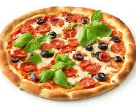

pizza

Description
This grilled pizza is topped with tomato sauce, tomatoes, black olives, roasted red peppers, mozzarella cheese,
and fresh basil. Of course, you can use whatever toppings you like!
ingrdients
- 1 cup warm water (110 degrees F/45 degrees C)
- 1 (.25 ounce) package active dry yeast
- 1 pinch white sugar
- 3 ⅓ cups all-purpose flour
- 1 tablespoon olive oil
- 2 teaspoons kosher salt
- 2 cloves garlic, minced
- 1 tablespoon chopped fresh basil
Steps
- Gather all ingredients.
- Make dough: Pour warm water into a large bowl; dissolve yeast and sugar in warm water. Let stand until yeast
softens and begins to form a creamy foam, about 5 to 10 minutes.
- Mix in flour, 1 tablespoon olive oil, and salt until dough pulls away from the sides of the bowl.
- Turn onto a lightly floured surface. Knead until smooth, about 8 minutes.
- Place dough in a well-oiled bowl and cover with a damp cloth.
- Set aside to rise until doubled, about 1 hour. Punch down; knead in garlic and basil. Set aside to rise for
1 more hour, or until doubled again.
- Meanwhile, make garlic oil: Combine 1/2 cup olive oil with minced garlic in a microwave-safe cup or bowl.
Heat for 30 seconds in the microwave.
- Preheat an outdoor grill for high heat; brush the grate with garlic oil.
- Make pizzas: Punch down dough and divide in half. Form each half into an oblong shape 3/8 to 1/2 inch thick.
- Carefully place one piece of dough on the hot grill. Dough will begin to puff almost immediately. When the
bottom crust has lightly browned, turn dough over using two spatulas.
- Working quickly, brush garlic oil over crust.
- Top with 1/2 of each of the following: tomato sauce, chopped tomatoes, olives, red peppers, cheese, and
basil.
- Close the lid and cook until cheese melts. Remove from grill and set aside to cool for a few minutes. Repeat
with second piece of dough.
- Serve hot and enjoy!
home